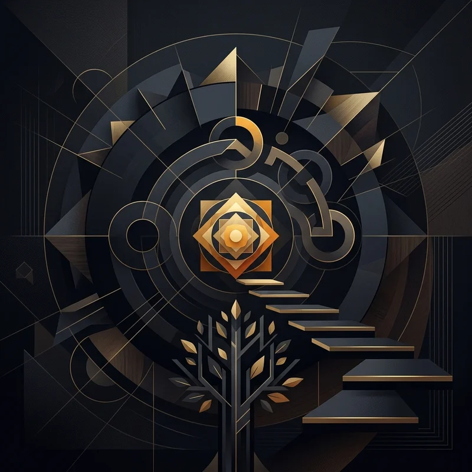

🔍 ZoomWichtige Denker
Kerngedanken
Die indische Philosophie erforscht tiefgründig die Natur des Bewusstseins, die Überwindung des Leids und die Illusion der Dualität.
Wissen testen
Bist du bereit, dein Wissen über diese Epoche auf die Probe zu stellen?
Zum Quiz